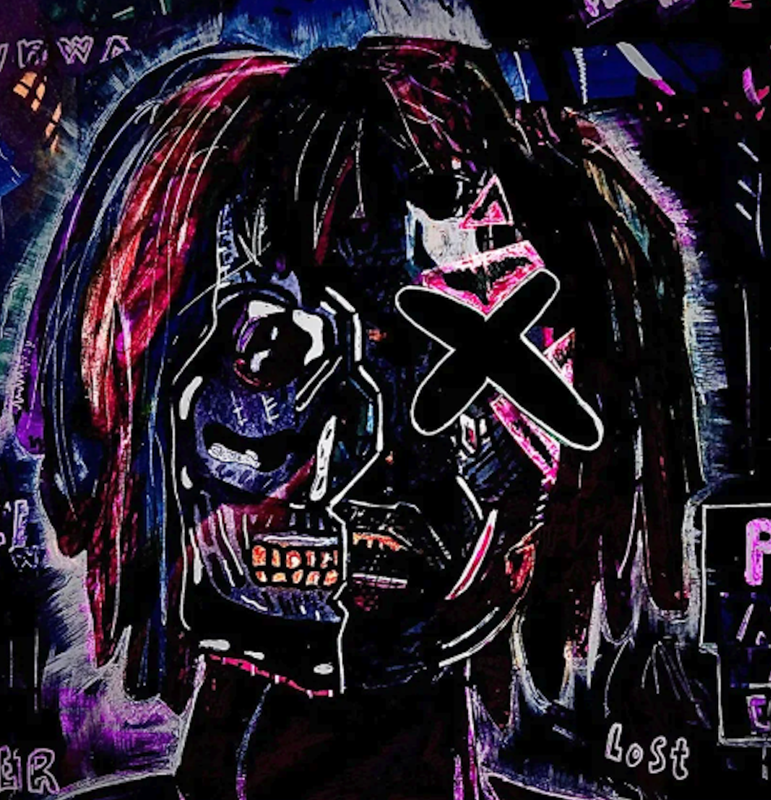

Piece 1
This piece was for my elements and principles of art assignment, my sustained investigation was portraying music and sound in art and this piece was inspired by the industrial, grimy sounds of underground hip hop. The main inspiration for this piece is one of my favorite albums, atrocity exhibition by Danny Brown, the album cover uses a similar purple color scheme with a half-skeleton/half-man as the centerpiece. Along with the album art, the album itself is very dark, loud, and overwhelming and I tried to capture those feelings in my art